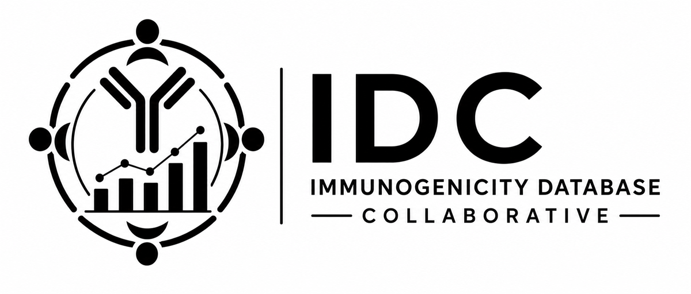

Standardized Data
Structured variables, controlled vocabularies, clinical metadata, and therapeutic characteristics support reusable analyses.
Open-access immunogenicity data
A grass-roots, cross-industry collaborative building an open-access database of immunogenicity data associated with biologic therapeutics.

Our Mission
By creating standardized and accessible datasets, the IDC seeks to accelerate scientific understanding of unwanted immunogenicity and improve immunogenicity risk assessment and mitigation strategies.
What is the IDC?
The IDC brings together scientists from industry, academia, and related organizations to harmonize fragmented immunogenicity information, enable new analyses, and provide a foundation for future community-driven data sharing.
Structured variables, controlled vocabularies, clinical metadata, and therapeutic characteristics support reusable analyses.
The collaborative reflects shared expertise across immunogenicity science, clinical development, data science, and related disciplines.
The database is intended to serve researchers, developers, regulators, and data scientists as a sustainable public resource.
What We Have Accomplished
The first public IDC dataset release establishes the initial database architecture and clinical immunogenicity framework.
BioRxiv preprint available. Companion manuscript currently under peer review.
Current Focus
The next phase expands clinical coverage, ADA impact data, and structures for nonclinical evidence.
Development of scalable data acquisition pipelines for ClinicalTrials.gov, the European Union Clinical Trials Registry, and additional public clinical data sources.
Expansion beyond ADA frequency to capture pharmacokinetic, efficacy, safety, and neutralizing antibody outcomes.
Database structures for preclinical immunogenicity information, with an initial focus on in vitro T cell antigenicity readouts and future expansions into MAPPs, DC uptake, pre-existing ADA, biophysical properties, and other related data types.